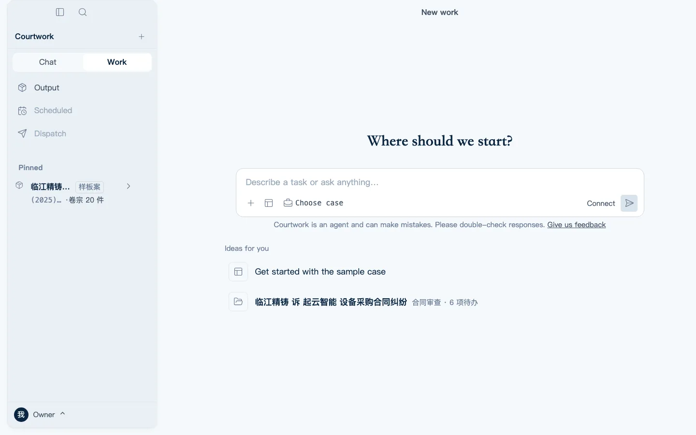
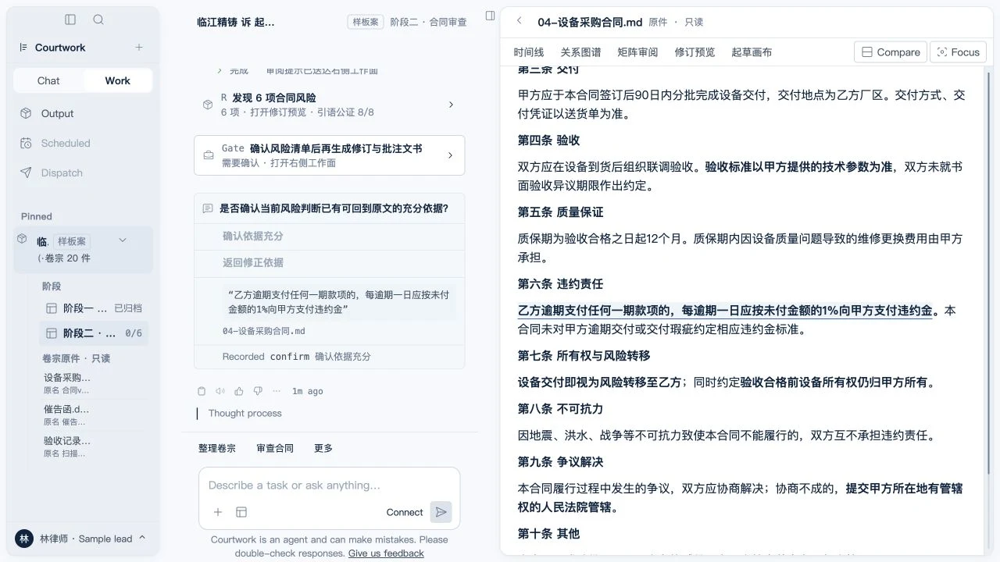
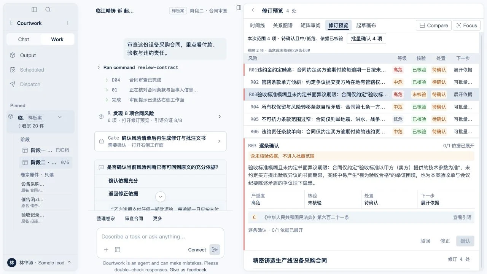

卷宗
从散材料到案件
文件先进入案件范围，再由整理计划决定去向；原件始终只读，执行前必须确认。


一条结论如何产生
以下四步来自同一份虚构样板案材料，不是页面文案拼出来的示意数据。
乙方逾期支付任何一期款项的，每逾期一日应按未付金额的1%向甲方支付违约金。本合同未对甲方逾期交付或交付瑕疵约定相应违约金标准。04-设备采购合同 · 第 1 页
“每逾期一日应按未付金额的1%向甲方支付违约金”页码与文本区间由系统解析
每日 1% 且只约束买方，权利义务显著失衡；建议改为双向、封顶并与实际损失挂钩。
高风险 · 依据已核验模型不能替你落格。确认、驳回或修正都会留下可回放记录。
待确认 · 不自动送出真实工作面
文件先进入案件范围，再由整理计划决定去向；原件始终只读，执行前必须确认。

证据不是一个“引用”标签，而是文件、页码、逐字引语和可回到原文的系统坐标。
风险、依据核验与处置状态同时出现；高危和未核验条目不能混进批量确认。

产品边界
Courtwork